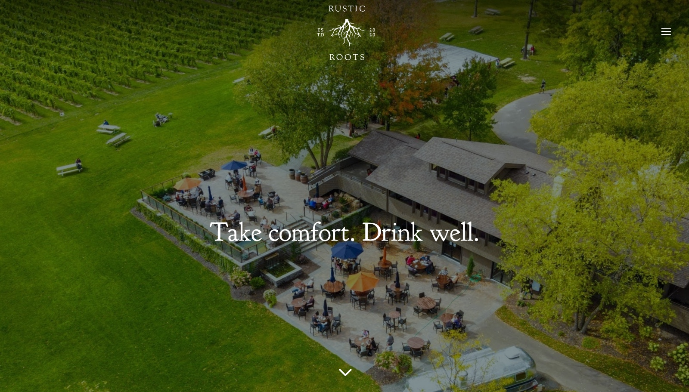
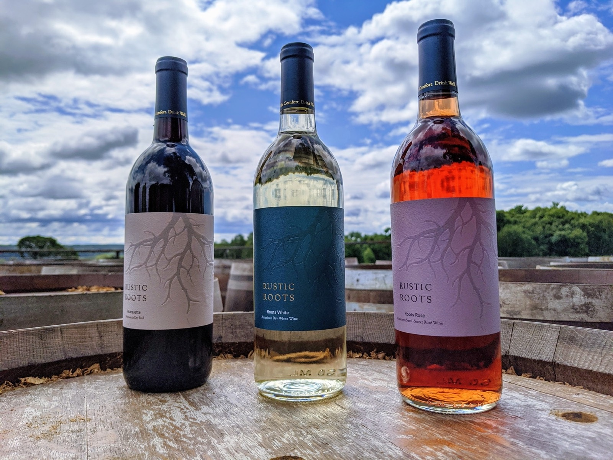
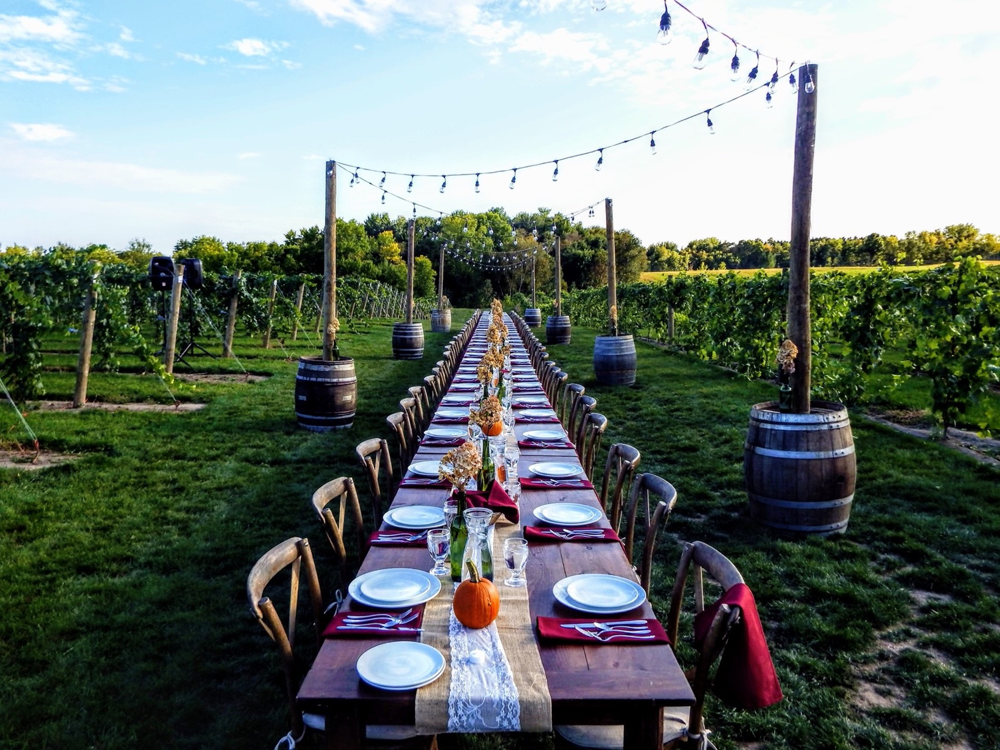
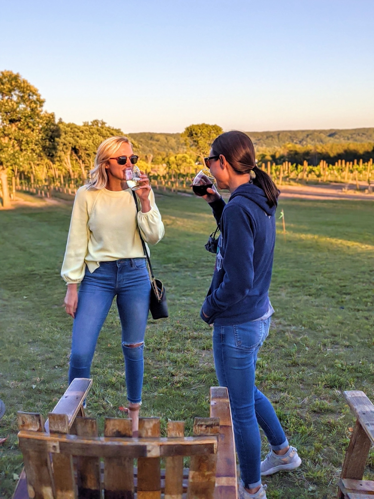
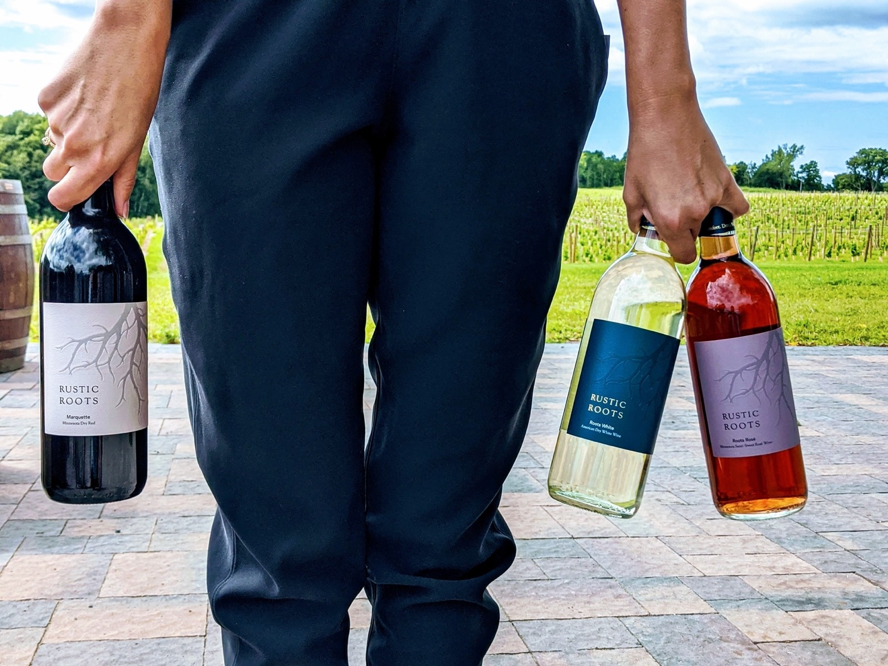
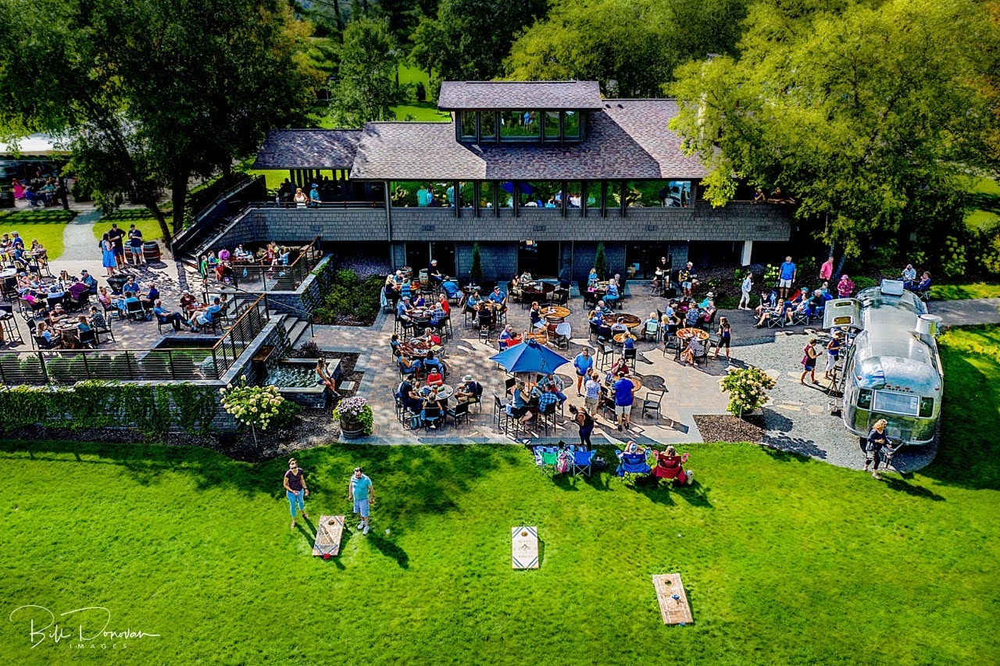

Branding & Content

Take comfort. Drink well.
Two local business leaders came to me with a dream to build a winery from the ground up. They needed more than just a logo. They needed a full identity, a distinct sense of place, and a brand strategy that could transform a gorgeous piece of land into a true local destination.
Wine culture is notorious for making everyday people feel out of place before they even take a sip.
Everything needed to launch a brand and give it lasting staying power. We named the winery, built the brand identity and logo, and launched the digital and social presence from the ground up. Since launch, I've stayed on as they've expanded into a regional powerhouse — adding new offerings and scaling their footprint, while keeping the core of the brand an unpretentious, welcoming place built by and for the community.




